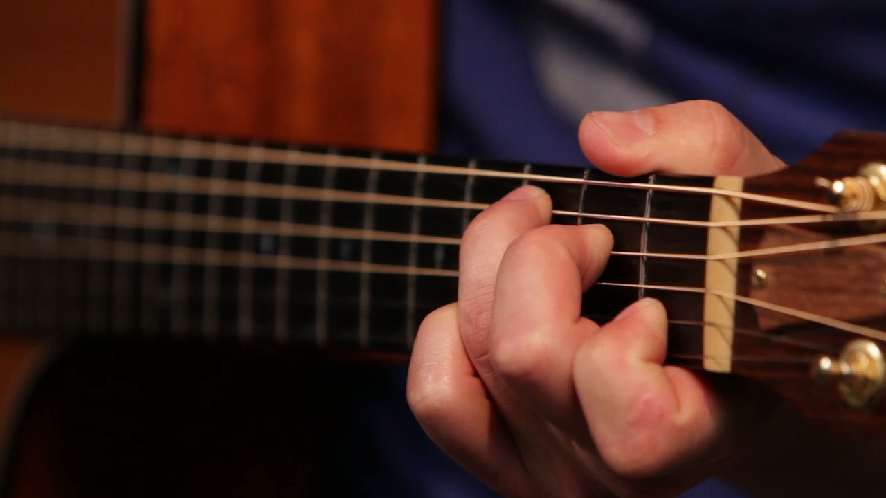
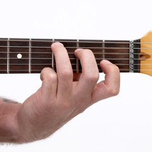

This site will teach how how to play the C chord in the open position on the electric or acoustic guitar.
You will need:
You only want to play the top 5 strings of the guitar for this basic C chord. The bottom E string should be muted or remain unplayed. Place your ring finger on the 3rd fret of the A string. Place your middle finger on the 2nd fret of the D string. The G string should be open. Place your pointer finger on the first fret of the B string. The high E string should be open. Strum the C chord. Congratulations! 